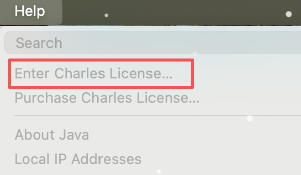
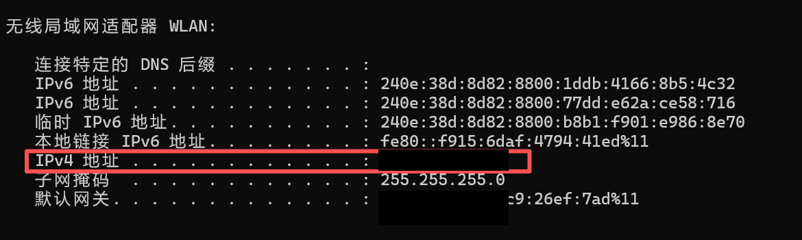
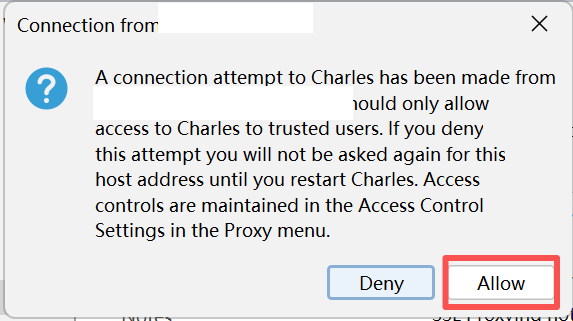
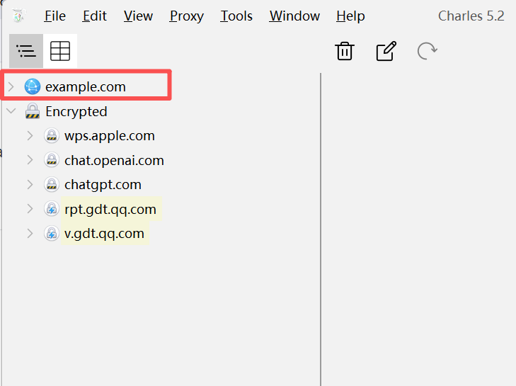
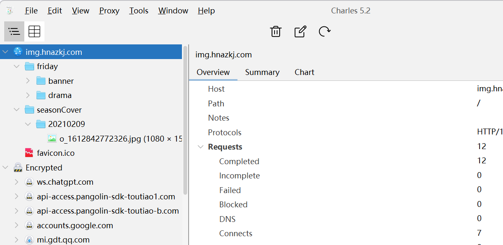

1. 下载和安装 Charles
直接从 Charles 官网下载。Charles 是商业软件，通常可以先试用，常见试用期按 30 天理解，具体以软件实际提示为准；试用结束后建议购买官方授权，避免授权异常影响测试工作。
- Windows 电脑：在官网下载页选择 Windows 版本，优先用官网推荐的安装包。
- Mac 电脑：在官网下载页选择 macOS 版本。
- 安装完成后打开 Charles。
- Windows 如果出现防火墙提示，选择允许 Charles 访问网络。
输入破解版Charles 激活码
Charles 破解工具，然后在菜单 Help → Enter Charles License... 输入注册码。

2. 找到 Windows 正确 IP
手机代理里要填的是电脑当前 Wi-Fi 网卡的 IPv4 地址。只看 无线局域网适配器 WLAN、WLAN 或 Wi-Fi 下面的 IPv4 地址。
- 按 Win + R。
- 输入
cmd，回车。 - 输入
ipconfig，回车。 - 找到
无线局域网适配器 WLAN。 - 复制它下面的
IPv4 地址，等下填到手机代理的“服务器”里。
正确示例：看 WLAN 这一块的 IPv4 地址。

3. 手机设置代理
iOS 手机抓包配置
- iPhone 打开
设置→无线局域网。 - 点击当前 Wi-Fi 右侧的
i。 - 拉到最下面，点击
配置代理。 - 选择
手动。 服务器填第 2 步查到的 Windows WLAN IPv4 地址。端口填8888。- 点击
存储。
Android 手机抓包配置
- Android 手机打开
设置→WLAN / Wi-Fi。 - 点击当前 Wi-Fi 详情，或长按当前 Wi-Fi 选择修改网络。
- 代理选择
手动。 代理主机名填第 2 步查到的 Windows WLAN IPv4 地址。代理端口填8888。- 保存。
4. Charles 弹窗点 Allow
手机设置代理后，只要手机开始访问网络，Charles 可能会弹出连接确认窗口。这个窗口是在问：是否允许这台手机把请求发到 Charles。

看到这个弹窗时，点击 Allow。如果点了 Deny，这台手机这次就会被拒绝。
如果没有弹窗
- 先不要急，之前允许过的话可能不会再弹。
- 用第 5 步的方法验证 Charles 左侧有没有请求。
- 如果确实想重新弹出，进入
Proxy→Access Control Settings...，删除已有手机记录，再重新设置手机代理并访问网页。
5. 验证是否连上
安装、IP、代理、Allow 都做完后，用手机浏览器访问一个普通网页来判断是否真的连上。
- 电脑保持 Charles 打开。
- 手机浏览器打开
http://example.com。 - 看 Charles 左侧是否出现
example.com。

如图，左侧出现 example.com，说明手机已经通过 Charles 代理访问网络。
example.com 或手机访问过的网站域名，说明手机已经连上 Charles。后面抓不到 App 明文，通常就是 HTTPS 证书、SSL Proxying、App 证书锁定或 Android 系统限制的问题。
6. HTTPS 证书和 Encrypted
Charles 左侧看到 Encrypted，意思是这些 HTTPS 连接还没有被 Charles 解密。能看到域名，不一定能看到里面的请求参数和返回内容。

电脑需要安装证书吗
如果只是抓手机 App，电脑通常不需要安装 Charles 证书。手机 App 的 HTTPS 请求是在手机上发起的，所以重点是手机安装并信任 Charles 证书。
只有在抓电脑浏览器、电脑客户端、桌面软件的 HTTPS 请求时，才需要在电脑上安装并信任 Charles 根证书。Windows 上入口是 Help → SSL Proxying → Install Charles Root Certificate，然后把证书放到受信任的根证书颁发机构里。
iOS 安装证书
- 手机代理保持开启。
- iPhone Safari 打开
http://chls.pro/ssl。 - 允许下载描述文件。
- 进入
设置，点击顶部的已下载描述文件，安装 Charles 证书。 - 再进入
设置→通用→关于本机→证书信任设置。 - 打开
Charles Proxy CA的完全信任。
Android 安装证书
- 手机代理保持开启。
- Android 浏览器打开
http://chls.pro/ssl。 - 下载证书。
- 进入系统设置搜索
安装证书、CA 证书或加密与凭据。 - 选择从存储安装 CA 证书。
对接口域名开启 SSL Proxying
- 手机打开 App，操作登录、首页、列表等页面。
- Charles 左侧找到 App 的接口域名。
- 右键这个域名。
- 点击
Enable SSL Proxying。 - 完全关闭 App 后重新打开，再操作一遍。
7. Charles 界面怎么看
Charles 左侧是请求列表，右侧是选中请求的详情。官方文档也说明，Charles 可以用结构视图按域名和路径组织请求，点中请求后右侧会显示请求和响应详情。
| 界面位置 | 怎么看 |
|---|---|
| 左上两个视图按钮 | 一个是按时间顺序看请求，一个是按域名和文件夹结构看请求。新手建议用结构视图，更容易找接口域名。 |
| 左侧域名 | 例如 api.xxx.com、m.xxx.com、img.xxx.com。业务接口通常在 api、gateway、service、app、m 这类域名下。 |
| 图片、favicon、jpg、png | 这些多半是静态资源，不是接口问题的重点。 |
Encrypted |
HTTPS 加密分组。里面如果只是第三方域名、广告、统计、聊天、系统服务，通常不用管；如果是 App 接口域名，就要装证书并开启 SSL Proxying。 |
右侧 Overview |
看 Host、Path、Protocol、请求数量、是否失败。 |
右侧 Summary |
看请求概览，适合快速确认某个域名下面有哪些路径。 |
右侧 Chart |
看耗时和请求分布，排查慢接口时有用。 |
| 顶部垃圾桶图标 | 清空当前会话记录。抓一个新场景前可以先点它，避免旧请求干扰。 |
Proxy 里和 Recording 相关的选项判断是否正在记录。只要左侧会新增请求，就说明正在记录。
8. 抓接口时看什么数据
流程跑通后，真正要看的不是“所有请求”，而是和你刚才 App 操作对应的那几条业务接口。
8.1 先过滤出业务接口
- 点垃圾桶清空旧记录。
- 在 App 里只做一个动作，例如点击登录、打开列表、提交订单。
- 回 Charles 左侧看新增了哪些域名和路径。
- 优先看
api、gateway、service、app、m这类域名。 - 先忽略图片域名、广告 SDK、统计 SDK、系统服务域名。
8.2 点开一条接口后看这些字段
| 字段 | 代表什么 | 测试时怎么用 |
|---|---|---|
| Host | 域名 | 判断是不是业务服务器。 |
| Path / URL | 接口路径 | 判断具体接口，例如登录、列表、详情、提交。 |
| Method | 请求方法，如 GET、POST |
GET 多用于查询，POST 多用于提交。 |
| Status | HTTP 状态码 | 200 通常成功；401 多为登录失效；403 多为无权限；404 地址不对；500 服务端异常。 |
| Query / Form / JSON Body | 请求参数 | 看 App 有没有把正确参数传给服务端。 |
| Response | 服务端返回 | 看接口返回是否成功、错误码是什么、数据字段是否符合预期。 |
| Timing / Chart | 耗时 | 判断接口慢不慢，是否卡在 DNS、连接、等待响应。 |
8.3 新手最常用的记录模板
App 操作：例如点击登录按钮
接口域名：例如 api / gateway 相关域名
接口路径：从 Path / URL 复制
请求参数：截图或复制 Query / JSON Body
返回状态：HTTP 状态码 + 业务 code
返回内容：关键 response 字段
问题描述：App 页面显示什么、接口返回什么、预期应该是什么
9. 保存和导出
- 抓完后点击
File→Save Session As...。 - 保存为
.chls文件，开发可以用 Charles 打开。 - 也可以点击
File→Export Session...，导出.har。
10. 常见问题
| 现象 | 原因 | 处理 |
|---|---|---|
| 手机设置代理后不能上网 | IP 或端口错；Charles 没打开；防火墙拦截。 | 确认填的是 WLAN IPv4；端口是 8888；允许 Charles 通过防火墙。 |
| Charles 左侧没有任何请求 | 手机没有连到 Charles。 | 手机浏览器打开 http://example.com 测试；检查同一 Wi-Fi 和代理设置。 |
| 有域名，但都在 Encrypted 下面 | HTTPS 未解密。 | 安装并信任证书，对目标接口域名开启 Enable SSL Proxying。 |
| iOS 浏览器能抓，App 不能抓 | App 不走系统代理，或做了 SSL Pinning。 | 让开发确认代理支持，或提供关闭 Pinning 的测试包。 |
| Android 浏览器能抓，App HTTPS 不能抓 | Android 7+ App 默认不信任用户证书。 | 让开发提供 debug 包，并配置网络安全策略信任用户 CA。 |
| 测试完手机不能上网 | 手机还开着手动代理，但电脑 Charles 关了。 | 把手机 Wi-Fi 代理改回关闭。 |
11. VPN 工具
如果测试环境需要先连接 VPN 或代理工具，再进行 App 抓包，可以先安装下面的 Windows 工具。
- 下载并安装工具。
- 按内部提供的账号信息登录或导入配置。
- 确认 VPN / 代理连接成功后，再按前面的步骤配置 Charles 和手机代理。